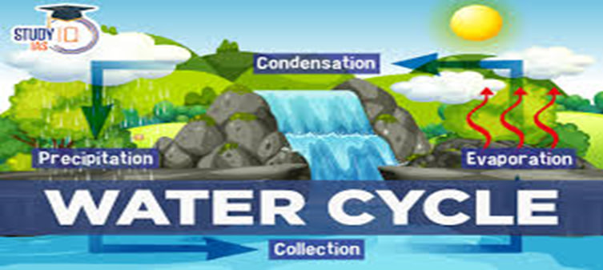
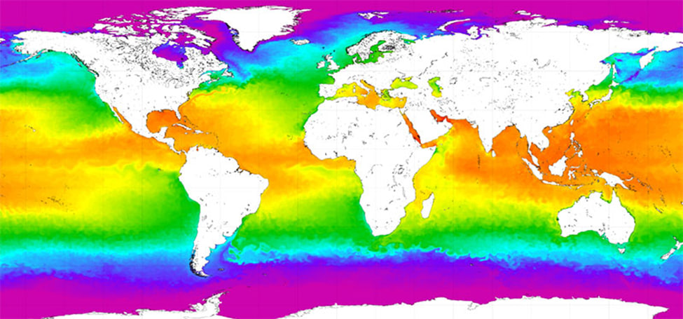
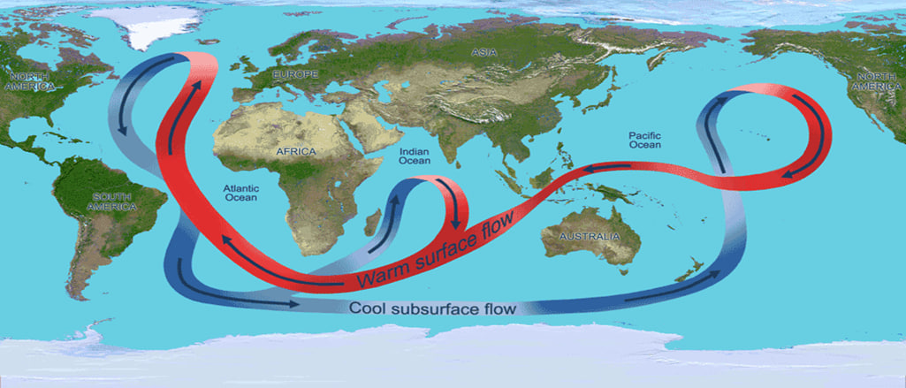
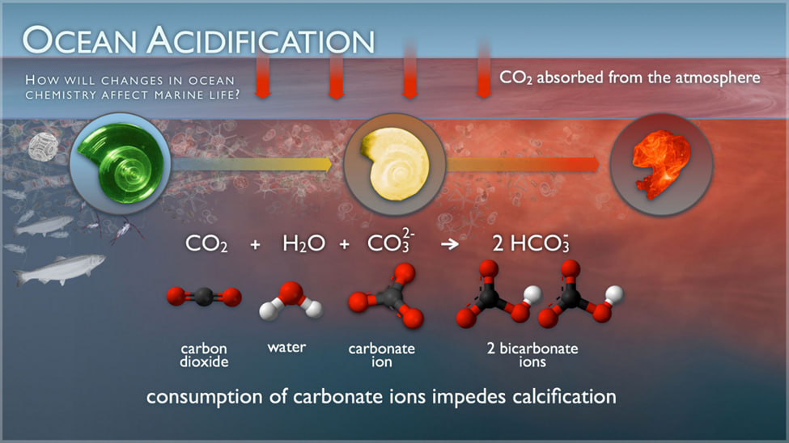
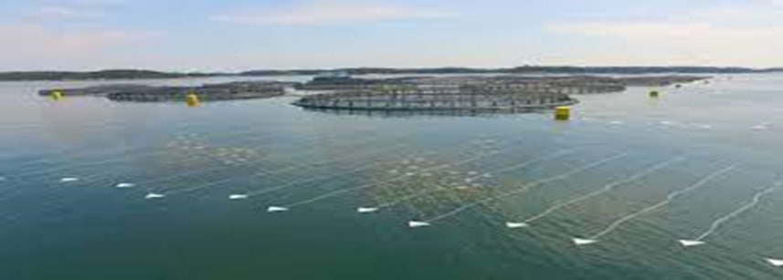
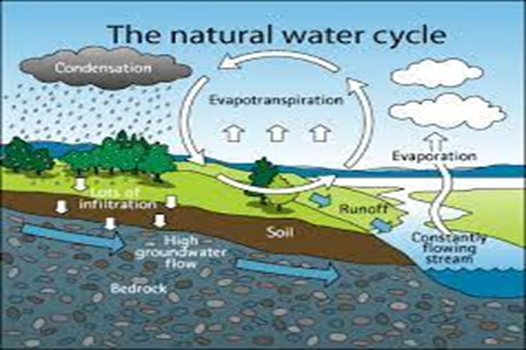

Water cycle
The Importance of the Ocean in the Water Cycle and Supporting Life on Earth
The ocean plays a critical role in the global water cycle, containing 97% of the Earth's total water and responsible for 78% of global precipitation and 86% of global evaporation. Evaporation from the ocean's surface is essential for the flow of heat in the climate system and influences atmospheric water vapor and rainfall. Water vapor transported by the atmosphere condenses as clouds and falls as rain, primarily in the Intertropical Convergence Zone (ITCZ), far from where it evaporated. Condensing water vapors release latent heat, which drives most of the tropics' atmospheric circulation and contributes significantly to the Earth's thermal balance, connecting the planet's energy and water cycles.
The global water cycle includes evaporation from land and ocean surfaces, transport of water vapor by the atmosphere, precipitation onto land and ocean surfaces, net atmospheric transport of water from land areas to the ocean, and the return flow of fresh water from land back into the ocean. The situation on land is more complex, including deposition of rain and snow, water flow in runoff, infiltration of water into soil and groundwater, storage of water in soil, lakes, streams, and groundwater, polar and glacial ice, and use of water in vegetation and human activities.
Evaporation ("E") controls the loss of fresh water and precipitation ("P") governs most of the gain of fresh water. Scientists monitor the relationship between these two primary processes in the oceans. Inputs from rivers and melting ice can also contribute to freshwater gains. Evaporation minus precipitation is usually referred to as the net flux of fresh water or the total fresh water in or out of the oceans. E-P determines surface salinity of the ocean, which helps determine the stability of the water column. Salinity and temperature determine the density of ocean water, and density influences the circulation. E-P determines surface salinity of the ocean, which helps determine the stability of the water column. Precipitation also affects the height of the ocean surface indirectly via salinity and density
The ocean plays a crucial role in maintaining Earth's warmth by absorbing most of the Sun's radiation, particularly in tropical waters around the equator. It also stores and distributes heat around the globe through evaporation, forming rain and storms that are carried by trade winds. Ocean currents, created by surface winds, temperature and salinity gradients, Earth's rotation, and tides, regulate global climate by transporting warm water and precipitation from the equator to the poles and cold water from the poles back to the tropics. Without currents, regional temperatures would be more extreme and less of Earth's land would be habitable.
Mass flows of water, or currents, are crucial for understanding how heat energy moves between Earth's water bodies, landmasses, and atmosphere. The ocean, covering 71% of the planet and holding 97% of its water, plays a significant role in the storage and transfer of heat energy across the globe. Ocean currents, located at the ocean surface and deep water below 300 meters, can move water horizontally and vertically, affecting local weather conditions, global climate patterns, gas cycling, and nutrient and larva delivery to marine ecosystems. Surface ocean currents are wind-driven, resulting in horizontal and vertical water movement. Deep ocean currents, driven by temperature, salinity, and depth, contribute to a global-scale circulation system called the global conveyor belt.
The ocean absorbs around 30% of the carbon dioxide (CO2) discharged into the atmosphere. The quantity of carbon dioxide absorbed by the ocean increases when atmospheric CO2 levels rise due to human activities such as burning fossil fuels (e.g., vehicle emissions) and altering land use (e.g., deforestation). When CO2 is absorbed by seawater, a sequence of chemical reactions occur, culminating in an increase in hydrogen ion concentration. This process has far-reaching consequences for the ocean and the organisms that inhabit there.
Water is home to millions of species and plays a crucial role in the global climate by being the largest carbon sink. It is used for cooking, cleaning, showering, flushing, food production, building homes, schools, roads, heating buildings, and cooling power plants. Water also connects people and goods, enabling global trade. However, the way we use and treat water impacts our health and all life dependent on it. Pollution, over-exploitation, physical habitat alterations, and climate change continue to undermine the quality and availability of water.
Conclusion
The ocean is an essential component of the global water cycle, containing 97% of all water on Earth and accounting for 78% of global precipitation and 86% of global evaporation. The impact of evaporation from the ocean's surface on atmospheric water vapor and rainfall drives the Earth's thermal balance. Evaporation from land and ocean surfaces, atmospheric movement of water vapor, precipitation on land and ocean surfaces, net atmospheric transport of water from land regions to the ocean, and the return flow of fresh water from land back into the ocean are all part of the global water cycle. Evaporation rules the loss of fresh water, whereas precipitation governs the majority of freshwater acquisition. The net flow of freshwater impacts water column stability and modulates circulation. Ocean currents govern global climate by moving warm water and precipitation from the equator to the poles and cold water from the poles back to the tropics. They are formed by surface winds, temperature and salinity gradients, Earth's rotation, and tides.